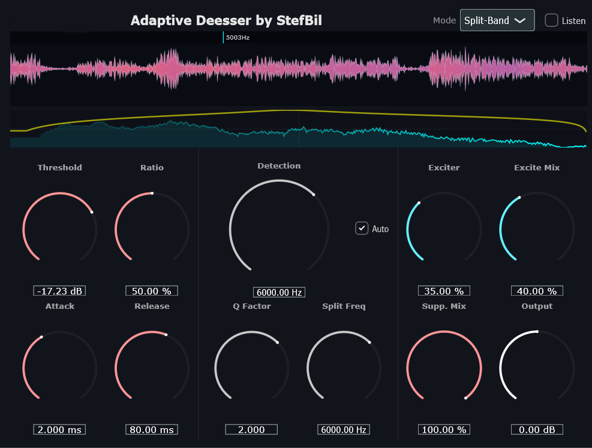
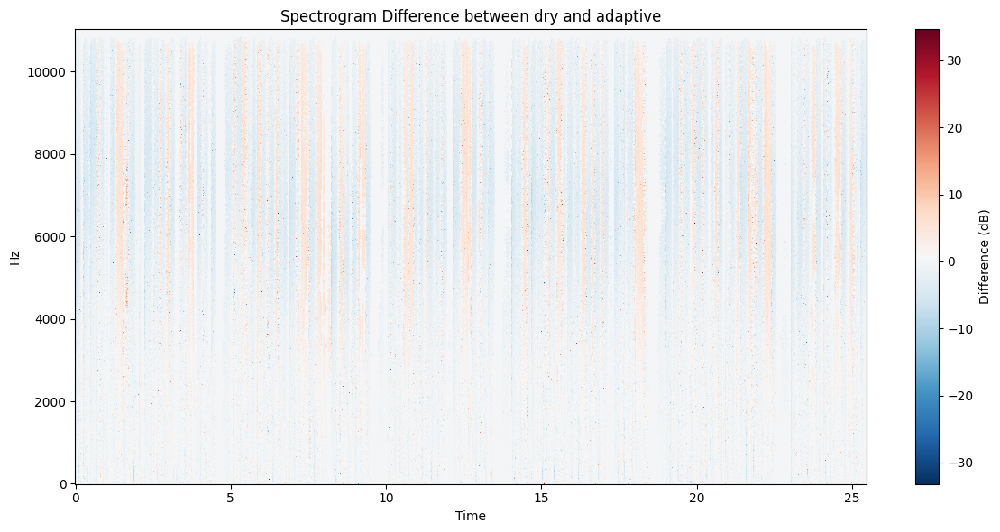
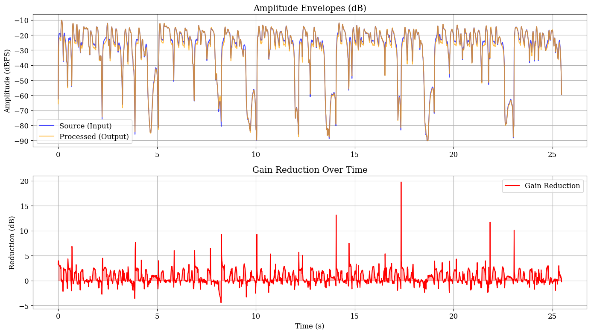

Abstract
High-fidelity vocal processing is frequently compromised by sibilance, a phenomenon characterized by stochastic high-frequency energy that presents unique dynamic range challenges. While traditional de-essing techniques often rely on static frequency bands, they fail to account for inter-speaker variability and changing dynamics. This paper presents an adaptive real-time de-essing application, developed using the JUCE framework, which automatically detects and suppresses sibilant frequencies. The proposed methodology integrates a derivative-based frequency tracking algorithm to estimate a spectral-centroid-like statistic without the computational overhead of the Fast Fourier Transform (FFT). This is coupled with a dual-path envelope detection system and a relative threshold logic to distinguish sibilance from the wideband signal. Additionally, a dynamic harmonic exciter is implemented to restore high-frequency presence during non-sibilant periods. Objective spectral analysis confirms the system's ability to selectively attenuate energy in the 2--11 kHz range while maintaining spectral transparency and minimizing artifacts. Across three vocal files, the adaptive method improves attenuation-frequency alignment relative to static processing by an average of 99.58 Hz, supporting automatic center-frequency tracking under speaker-dependent sibilance variation.
I. Introduction
The engineering of high fidelity vocal processing tools remains one of the most persistent challenges in digital signal processing. Among the various artifacts inherent to vocal recording, sibilance, which is high-frequency acoustic energy generated by turbulent airflow through the narrow channel of the vocal tract during fricative consonant articulation, poses a unique dynamic range problem. Sibilant sounds, such as /s/, /z/, /sh/ and /ch/, are characterized by stochastic noise-like waveforms with spectral energy typically concentrated between 2 kHz and 11 kHz [1]. De-essing is a technique to reduce sibilant sounds in speech signals [2].
Sibilance frequency varies with speaker physiology, microphone placement and recording environment [1]. Unlike static de-essers, which target a fixed frequency band and require manual tuning, this work presents an adaptive vocal de-essing processor that automatically detects sibilant audio, suppresses the signal, and dynamically applies excitation in real-time [3].
The hypothesis is that adaptive frequency tracking provides better frequency alignment across sessions than static frequency processing, while preserving vocal transparency.
II. Methodology
To test this hypothesis, a real-time audio VST3 plugin was developed using C++ and the JUCE framework. The methodology integrates digital signal processing (DSP) theory around state-variable filters (SVF) with software engineering patterns for real-time performance [4, 5].

A. Signal Decomposition and Crossover
The input signal \(x[n]\) is split into a broadband path and a sidechain path for sibilance isolation. The sidechain is processed with an SVF bandpass:
For split-band processing, a 4th-order Linkwitz-Riley crossover is implemented by cascading SVF low-pass stages:
This complementary subtraction ensures flat magnitude summation and avoids comb filtering [6].
B. Dual Envelope Detection and Relative Threshold Logic
The envelope follower uses asymmetric attack and release:
Detection compares sibilance and wideband envelopes:
C. Dynamic Harmonic Exciter
To compensate for brightness loss, excitation is applied inversely to the sibilance detector in clean regions:
The saturation stage preserves gain while adding odd-harmonic content [7].
D. Derivative-Based Frequency Estimation
With Auto Freq enabled, the processor estimates dominant sibilance frequency without a DFT:
The estimate is clamped to 3--11 kHz and slew-limited to 25 Hz/block to prevent unstable modulation under noisy conditions.
E. Lookahead Delay Compensation
A 2 ms circular lookahead buffer allows transient-aware suppression before peaks reach the gain stage, improving attack response [4].
III. Implementation
The application is delivered as both a VST3 plugin and a standalone executable from a single
juce::AudioProcessor architecture. The processBlock() routine handles real-time
audio input, while parameters are managed through
AudioProcessorValueTreeState (APVTS) with thread-safe atomics.
Two visualization modules run at 60 Hz on the message thread: a waveform scope using lock-free FIFO data transfer and an FFT analyzer using Blackman-Harris windowing (2048-point FFT, 512-bin display) for GUI analysis only [8].
IV. Results and Analysis
A. Methodology
A comparative spectral analysis was conducted on a male ElevenLabs Text-to-Speech v3 vocal sample with pronounced 6--11 kHz sibilance [9]. The plugin ran in Auto-Freq + Split-Band mode with threshold = -20 dB, suppression amount = 25%, attack = 2 ms, and release = 80 ms.
B. Spectral and Dynamic Behavior
Direct dry-versus-processed comparison shows selective attenuation within the sibilance band while keeping sub-4 kHz content stable.


The measured window reports 19.75 dB maximum gain reduction at the strongest sibilant event and 0.67 dB average gain reduction across the full sample, indicating selective control with strong overall transparency.
C. Comparison Against Static Baseline
The adaptive system was compared with Waves Renaissance DeEsser using matched control settings. The static baseline used fixed detection at 7.2 kHz.
| Condition | Sibilance RMS Reduction (dB) | Broadband Error (dB) | Over-suppression (%) |
|---|---|---|---|
| Static (\(f_c = 7.2\) kHz) | 6.89 | 0.20 | 29.28 |
| Adaptive (proposed) | 2.94 | 0.67 | 10.97 |
| File Set | Adaptive MAE (Hz) | Static MAE (Hz) | Advantage (Hz) |
|---|---|---|---|
| vocal_1 | 2021.45 | 2132.82 | +111.37 |
| vocal_2 | 1187.44 | 1358.86 | +171.42 |
| vocal_3 | 1148.99 | 1164.94 | +15.95 |
| Mean | 1452.63 | 1552.21 | +99.58 |
Although static processing can produce stronger attenuation under manually tuned conditions, adaptive processing consistently improves center-frequency alignment across sessions, which is the principal goal of the proposed method.
V. Discussion
A. Limitations
The derivative estimator can degrade at high noise floors. Because differentiation emphasizes high frequencies (+6 dB/octave per derivative), low-SNR material may cause unstable estimates. The high-band crossover path and slew-limited update reduce this effect, but noisy conditions remain a known limitation.
B. Future Work
- Multi-band excitation for separate low/mid/high saturation behavior [10].
- Phoneme-aware ML classification to distinguish true sibilance from breath/click artifacts.
- Adaptive feedback suppression using notch-filter tracking [11].
- Speech-enhancement integration for bandwidth-limited VoIP scenarios [12].
Code Availability
The source code, project files, and documentation are publicly available in the GitHub repository and mirrored on the project webpage.
GitHub Repository:
https://github.com/stefbil/Adaptive-Media-Systems-Adaptive-DeEsser
Project Webpage:
https://stefbil.github.io/stefbilmedams
References
- X. Grandchamp, A. Van Hirtum, X. Pelorson, K. Nozaki, and S. Shimojo, "Towards Sibilant /s/ Modelling: Preliminary Computational Results," Journal of the Acoustical Society of America, vol. 123, no. 5, 2008.
- M. Senior, "Techniques for Vocal De-essing," Sound on Sound, 2009. https://www.soundonsound.com/techniques/techniques-vocal-de-essing
- K. Linhard, P. Bulling, and A. Wolf, "Frequency Domain De-Essing for Hands-free Applications," in DAGA 2017, 2017.
- W. Pirkle, Designing Audio Effect Plugins in C++, Routledge, 2019.
- U. Zolzer et al., DAFX - Digital Audio Effects, John Wiley and Sons, 2002.
- S. H. Linkwitz, "Active crossover networks for noncoincident drivers," Journal of the Audio Engineering Society, vol. 24, no. 1, pp. 2-8, 1976.
- P. Dutilleux, K. Dempwolf, M. Holters, and U. Zolzer, "Nonlinear Processing," in DAFX: Digital Audio Effects, 2011.
- JUCE Documentation, https://docs.juce.com/master/index.html
- ElevenLabs Text-to-Speech v3, https://elevenlabs.io
- P. D. Pestana and J. D. Reiss, "Intelligent audio production strategies informed by best practices," in Proc. AES Int. Conf. Semantic Audio, 2013.
- B.-S. Chen, T.-Y. Yang, and B.-H. Lin, "Adaptive Notch Filter by Direct Frequency Estimation," Signal Processing, vol. 27, no. 2, pp. 161-176, 1992.
- P. C. Loizou, Speech Enhancement: Theory and Practice, CRC Press, 2007.